Benvingut/da a la Guia Digital Amiga
Hola! Aquesta guia està creada per a tu, si alguna vegada t'has sentit perdut/da amb el mòbil, si et fa vergonya demanar ajuda o si tens por de tocar algun botó i equivocar-te.
Sóc Natalia Roman Rivera, estudiant de Batxillerat, i he fet aquesta guia perquè sé que moltes persones adultes i grans tenen dificultats amb el mòbil. No és perquè no en siguin capaces, sinó perquè ningú els ha explicat les coses a poc a poc, amb calma i amb lletra gran.
Aquí trobaràs:
- Explicacions molt senzilles
- Passos clars i curts
- Lletra gran i fàcil de llegir
- Solucions a les coses que més acostumen a costar
- I sobretot: tranquil·litat perquè aquí pots aprendre sense pressa i sense vergonya
✧ Ajustos bàsics per fer el mòbil més còmode
Lletra gran i clara
Si et costa llegir la pantalla, no és culpa teva. La lletra sovint és massa petita. Aquí tens com fer-la més gran:
- Obre Configuració.
- Entra a Pantalla.
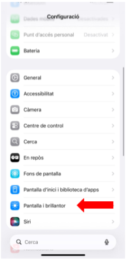
- Toca Mida del text.
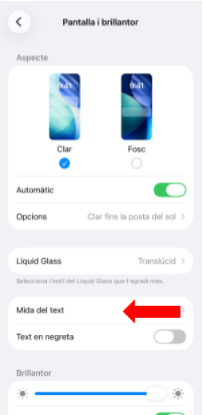
- Mou la barra fins que la lletra es vegi gran.
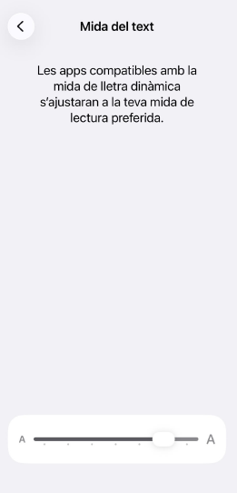
Text en negreta: Configuració → Accessibilitat → Text en negreta.
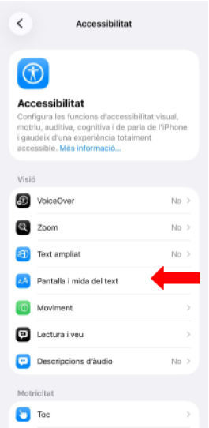
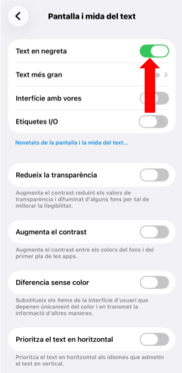
Zoom: Configuració → Accessibilitat → Zoom.
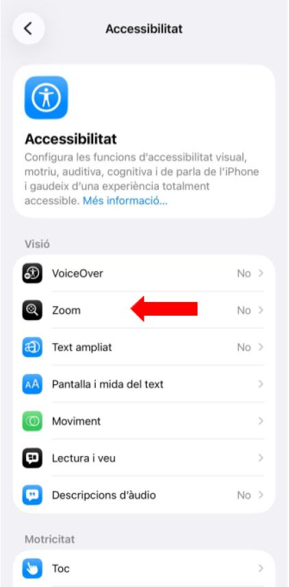
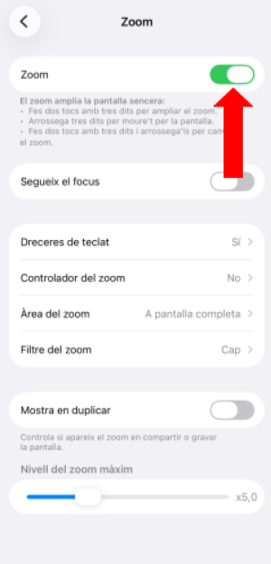
Volum i so
- Botons laterals per pujar o baixar el volum.
- Configuració → So → Vibració.
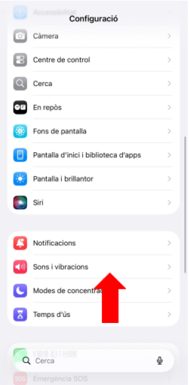
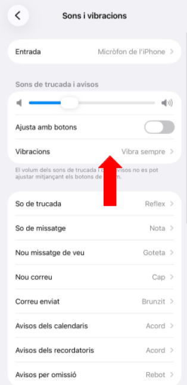
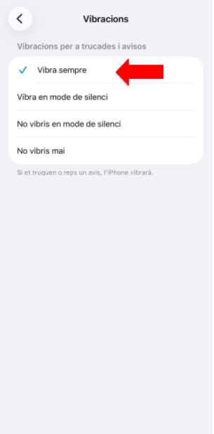
Configuració → Accessibilitat → Subtítols.
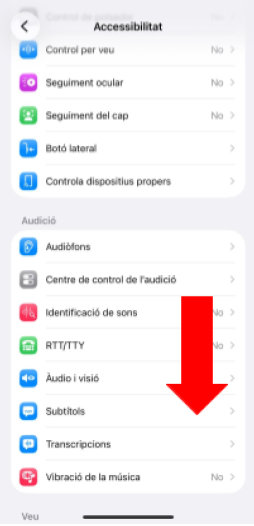
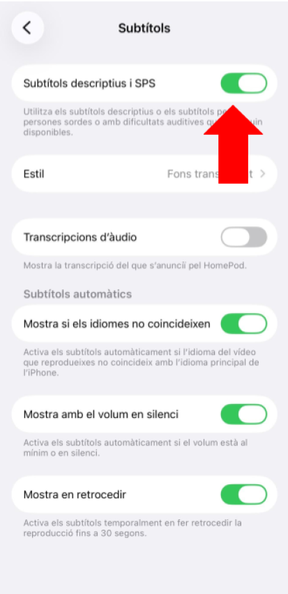
Mode fàcil
- TalkBack: el mòbil llegeix en veu alta el que hi ha a la pantalla.
- Mode senzill: icones grans i menys opcions.
✧ Aplicacions bàsiques del mòbil
La linterna: serveix per il·luminar en foscor. Normalment es troba a la barra superior del mòbil.
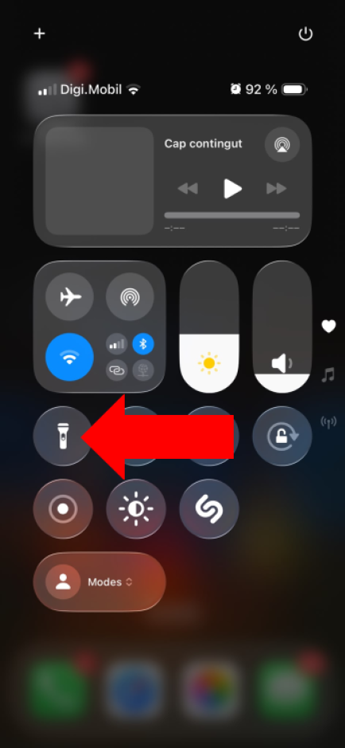
El calendari: serveix per recordar cites, aniversaris i medicació. Prem "+" per afegir un recordatori.
Notes: serveix per apuntar coses importants com la compra, medicació o telèfons.
La calculadora: ideal per fer comptes ràpids sense obrir el banc.
✧ WhatsApp: missatges, fotos, notes de veu i videotrucades
Enviar un missatge
- Obre WhatsApp.
- Toca el nom de la persona.
- Escriu el missatge.
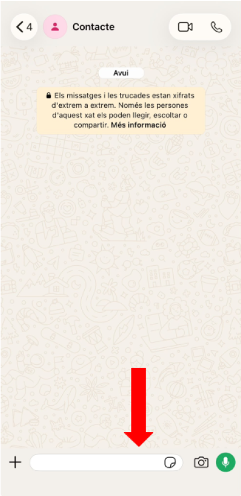
- Fes clic a l'icona d'enviar.
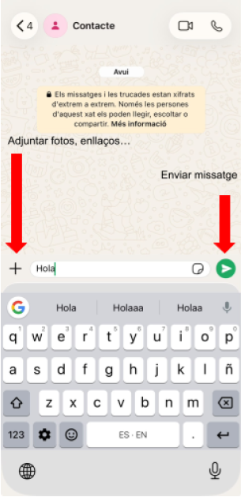
Enviar una foto
- Clip o càmera.
- Fes la foto o tria'n una.
- Envia.
Nota de veu
- Mantén premut el micròfon.
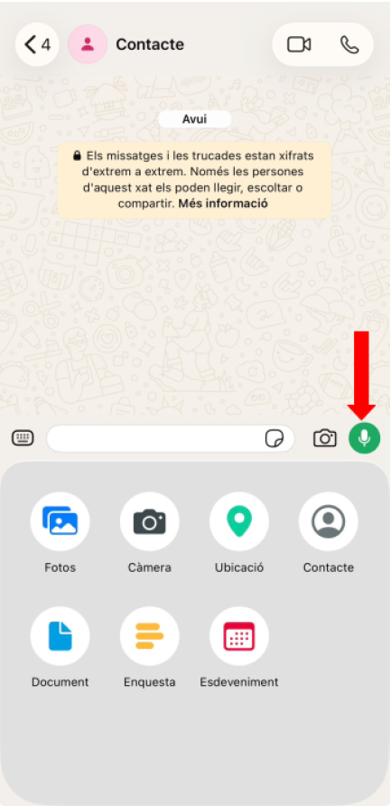
- Parla.
- Deixa de prémer el botó del micròfon.
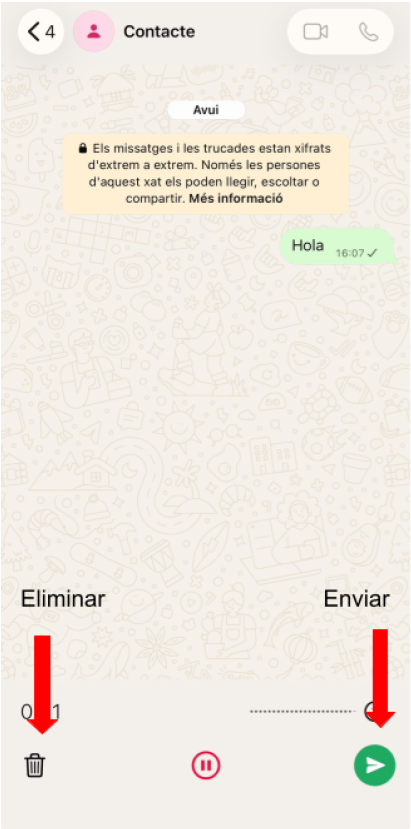
Videotrucada
- Entra al xat.
- Toca la càmera.
✧ Fotos i vídeos: fer, trobar, enviar i editar
Compartir fotos
- Obre la foto.
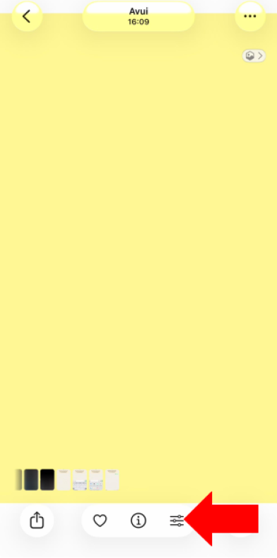
- Compartir.
- Tria WhatsApp.
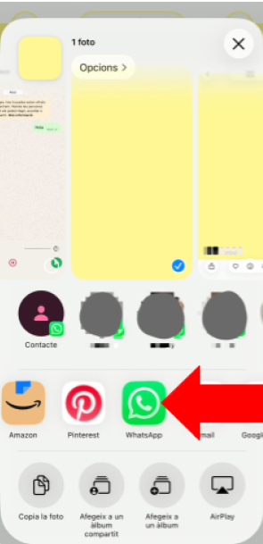
Editar fotos i vídeos (molt fàcil)
- Obre Galeria.
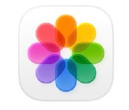
- Toca el vídeo.
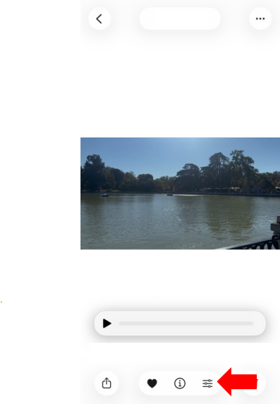
- Prem Editar.
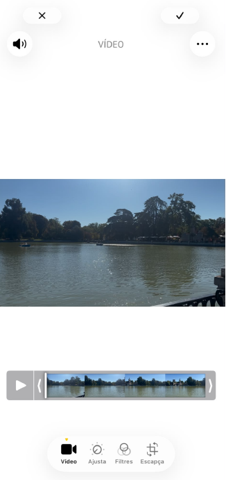
- Pots tallar, retallar o afegir música.
- Guarda.
✧ Manteniment del mòbil
Eliminar fotos duplicades
- Galeria
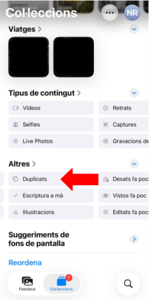
- Àlbums → Duplicats
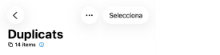
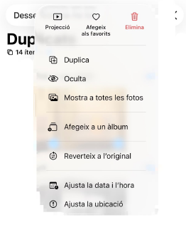
- Eliminar.
Eliminar aplicacions que no uses
- Mantén premut sobre l'app → Eliminar.
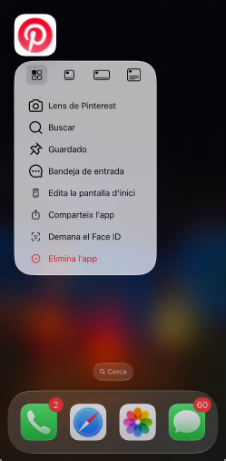
Actualitzar aplicacions: Play Store / App Store → Actualitzacions.
Evitar que el mòbil vagi lent
- Tanca pestanyes, elimina apps i reinicia el mòbil un cop per setmana.
✧ Internet: buscar, entrar a webs i no perdre't
Buscar informació a Google
- Obre Chrome.
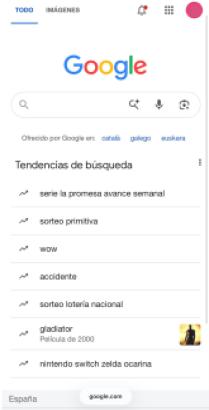
- Escriu el que vols saber.
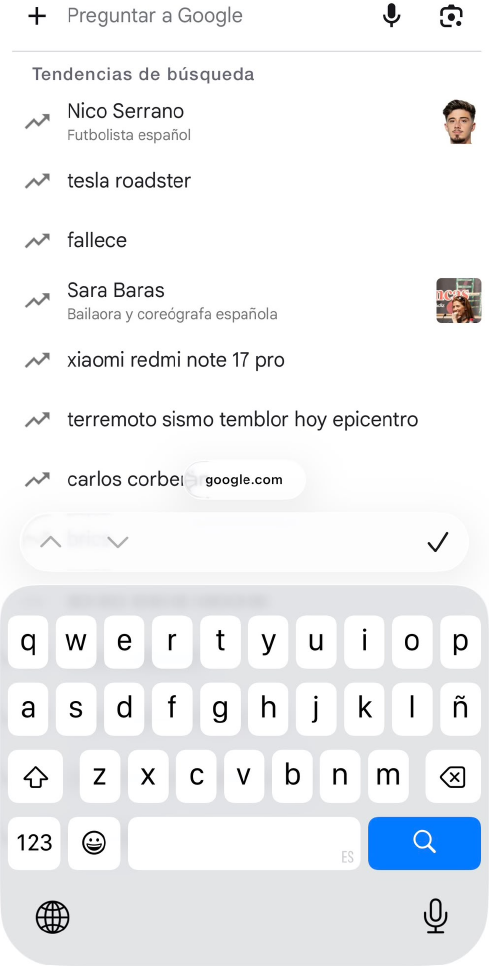
- Prem Buscar.
Buscar amb la veu
- Prem el micròfon.
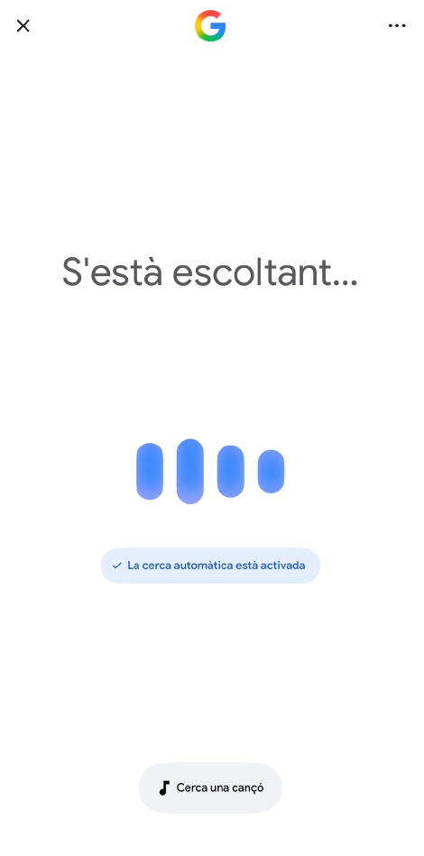
- Digues el que vols buscar.
Entrar a una pàgina web
- Escriu el nom de la web.
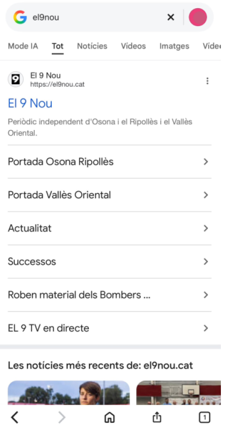
- Toca el primer resultat oficial.
- Si et perds, prem "enrere".
Tancar finestres
- Botó de pestanyes.
- Tanca amb la X.
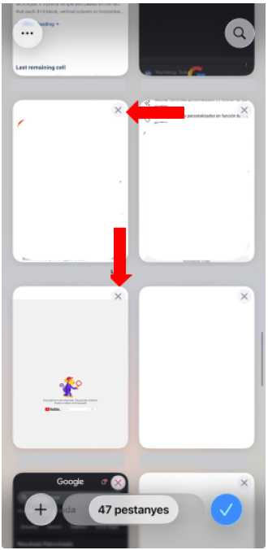
Xarxes socials explicades fàcilment
Facebook: veure fotos de la família, llegir notícies, comentar.
Instagram: Story (foto de 24h), Post (foto normal), Reels (vídeos curts).
YouTube: vídeos de música, receptes, notícies, exercicis suaus.
TikTok: vídeos curts. No cal publicar res, només mirar.
Llenguatge jove explicat
✧ Documents: descarregar, trobar, obrir, enviar i firmar
Descarregar documents
- Toca "Descarregar".
- El document va a Fitxers → Descàrregues.
Trobar documents
- Obre Fitxers.
- Entra a Descàrregues.
- Toca el document.
Obrir PDF
- Toca el PDF.
- Fes zoom amb dos dits.
- Si la lletra és petita, activa el zoom del mòbil.
Enviar un document
- Obre el document.
- Prem Compartir.
- Tria WhatsApp o correu.
Firma digital
La firma digital és com una signatura per internet.
- Reps un document.
- Toca "Firmar".
- Escrius la teva signatura amb el dit.
- Prem "Guardar".
✧ Tràmits online: cita mèdica, documents oficials, webs complicades
Demana cita mèdica
- Entra a la web del CAP.
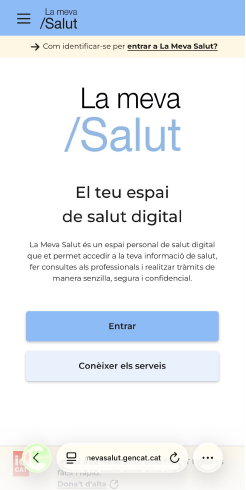
- Toca "Demana cita".
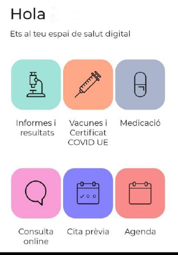
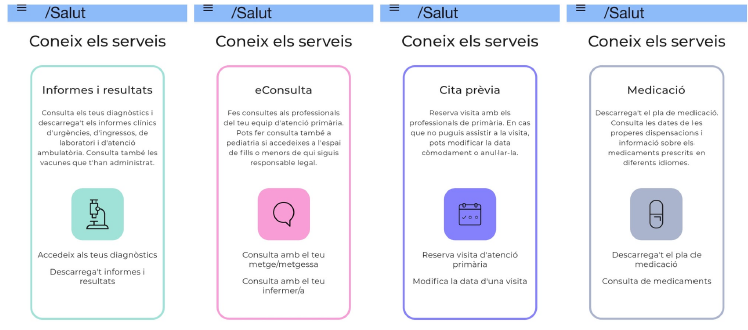
- Tria metge.
- Tria dia i hora.
- Confirmar.
Fer tràmits oficials
Les webs oficials sovint estan mal dissenyades. No és culpa teva si et perds.
Consells:
- Llegeix amb calma.
- Si surt una finestra estranya, tanca-la amb la X.
- Si no entens alguna cosa, torna enrere.
- Si demana contrasenya, escriu-la amb tranquil·litat.
- Si et confons, no passa res: pots començar de nou.
✧ Banc digital: moviments, transferències i seguretat
Entrar al banc
- Obre l'aplicació.
- Escriu usuari i contrasenya.
Consultar moviments
- Entra a "Moviments".
- Llegeix els últims càrrecs.
Fer una transferència
- Entra a "Transferències".
- Escriu el número de compte.
- Revisa dues vegades.
- Confirmar.
Seguretat
- No comparteixis contrasenyes.
- No facis transferències si tens dubtes.
- No cliquis en enllaços sospitosos.
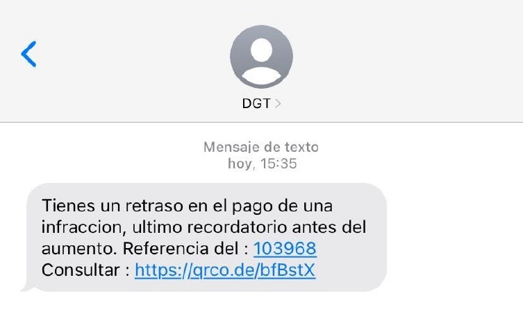
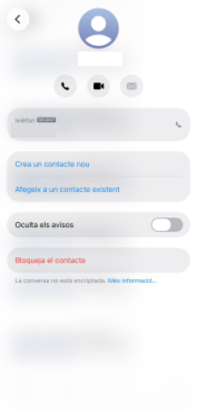
✧ Evitar estafes, spam i trucades automàtiques
Bloquejar números
Telèfon → mantén premut → Bloquejar.
Detectar estafes
- Demanen contrasenyes → sospitós.
- Premis inesperats → fals.
- Enllaços estranys → no clicar.
Trucades automàtiques
Si et demanen "prem 1, prem 2", pot confondre.
Consells
- Escolta amb calma.
- Si no ho entens, espera: ho repeteixen.
- Si et perds, penja i torna a trucar.
✧ Desconnectar quan el mòbil et satura
- Apaga notificacions.
- Llegeix llibres digitals amb lletra gran.
- Mira vídeos relaxants.
- Fes pauses de 10 minuts.
Ajuda ràpida
- No trobo una foto: Galeria → Recents.
- No puc connectar-me al Wifi: Configuració → Wifi.
- No sé tancar una finestra: Botó de pestanyes → X.
- No sé fer una videotrucada: WhatsApp → càmera.
✧ Per a familiars i joves
Si ajudes algú amb el mòbil:
- Parla a poc a poc.
- Repetir no molesta.
- Escriu els passos en un paper.
- No diguis "és fàcil".
- No ho facis tu: fes-ho amb ell/a.